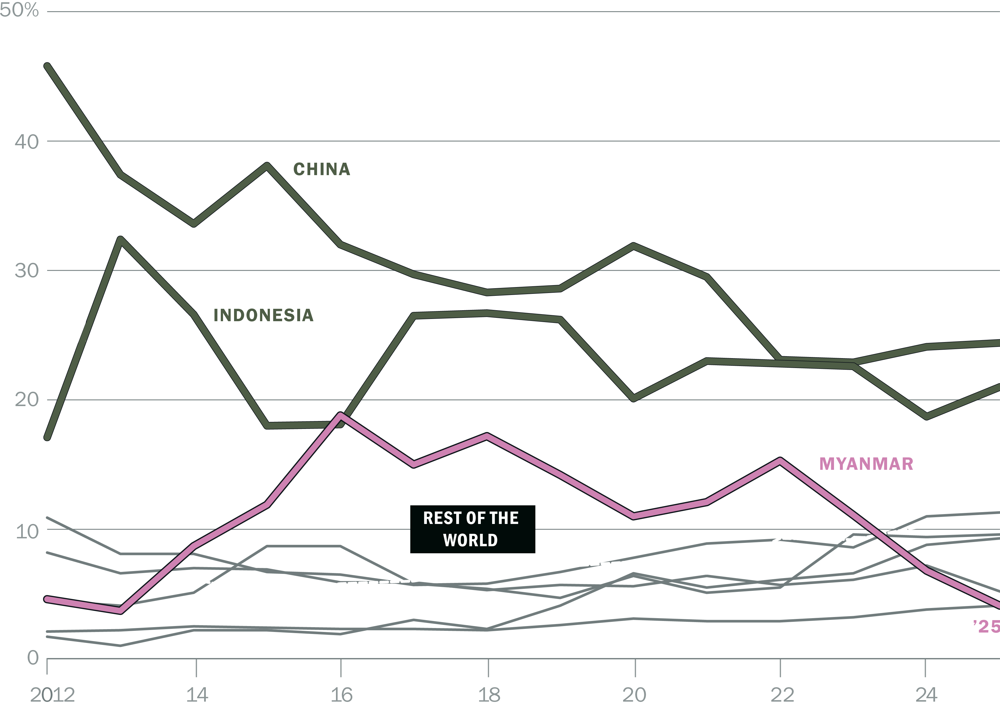
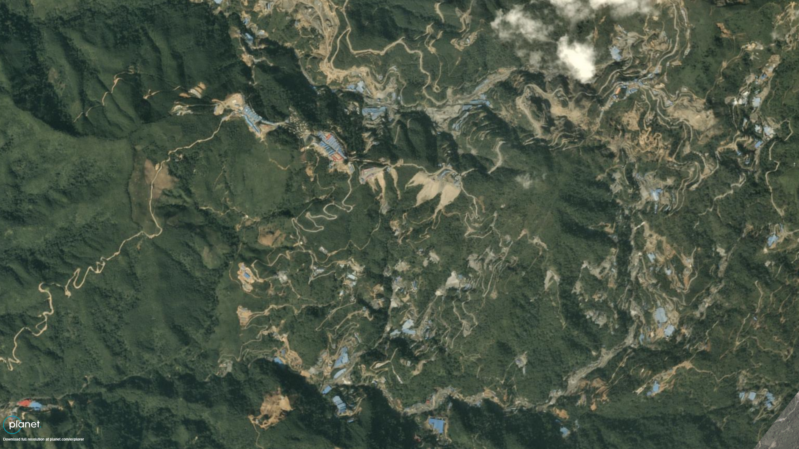
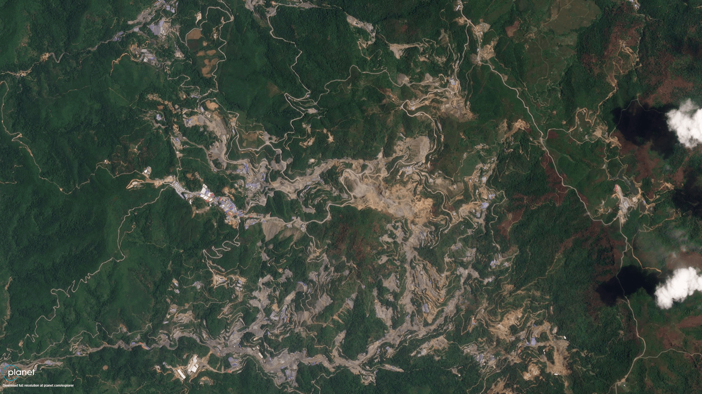
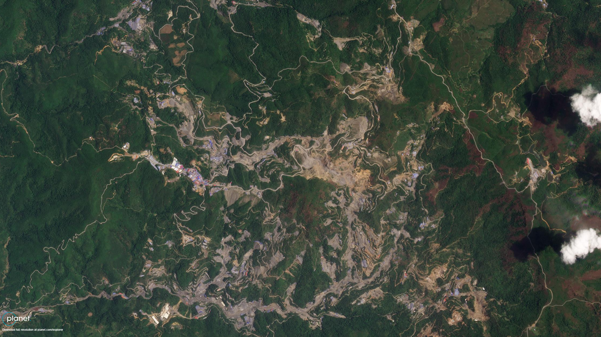
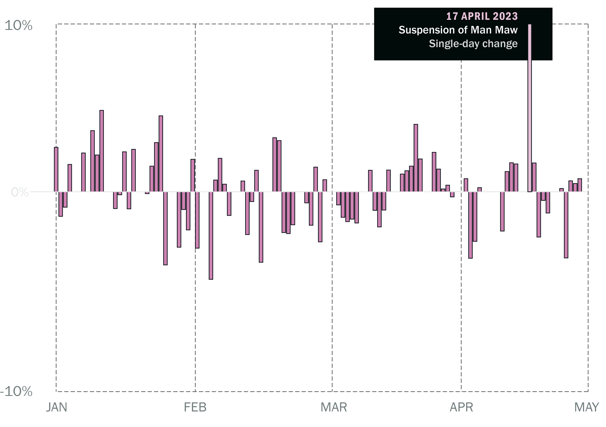
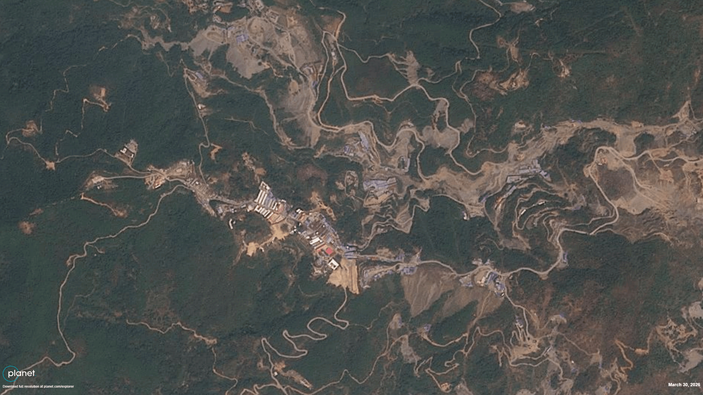
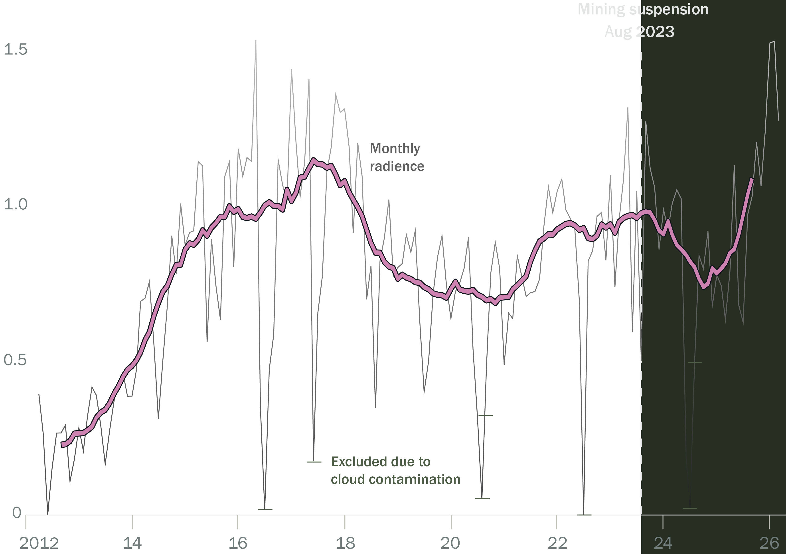

The Mine That Moves the Market
When a single mine in eastern Myanmar suspended operations in 2023, global tin prices spiked and smelters in China scrambled for supply. The shock rippled through global supply chains, raising costs for electronics and semiconductor manufacturers across the world. The mine has yet to resume major production, leaving global tin supplies imperilled just as demand surges with the AI data centre boom. Tin, in the form of solder, is a critical component in servers and data-centre infrastructure.
The Man Maw mine is located in an enclave near the Chinese border controlled by the United Wa State Army (UWSA), a powerful non-state militia of more than 20,000 fighters with high-tech weaponry that has maintained a ceasefire with the Myanmar military since 1989. The group does not only fund its army through mining. It has been under U.S. sanctions since 2003 for narcotics trafficking, while a grand jury later indicted eight senior leaders in absentia on heroin and methamphetamine charges.
At its peak in the late 2010s and early 2020s, Myanmar became the world’s third-largest tin producer, behind only China and Indonesia, with the vast majority of the metal coming from Man Maw. In some years, the mine supplied up to 40 per cent of China’s tin concentrate imports, making it a critical upstream source for global solder, electronics and semiconductor supply chains.
Myanmar, an Essential Supplier of Tin
Share (%) in global tin production, by country

Production at the mine expanded rapidly through the 2010s. Satellite imagery shows roads, ore pads, tailings dumps and worker housing spreading across previously forested hillsides.

2016
2019
2023The UWSA governs this territory as a de facto mini-state, largely insulated from Myanmar’s civil war even after the 2021 coup, as the decades-old ceasefire between the group and the military remains in place. That stability translated into predictable tin output, and growing global dependence on supplies from the region. Tin concentrate exports from Myanmar to China were worth over $1 billion annually at their peak. For a single armed group, control over such enormous flows gives it not only substantial revenue, but also political leverage in both Myanmar and China.
Then, in April 2023, Wa authorities announced a suspension of mining at Man Maw, ostensibly for a resource audit. Production effectively halted in August that year. Benchmark tin prices on the London Metal Exchange immediately jumped by 12 per cent, an abrupt price shock for an industrial metal. Smelters warned of tightening concentrate supply. Analysts described the global market as “beholden” to the fortunes of a single Myanmar mine.
Global Tin Prices Hike on the London Metal Exchange
Daily per cent (%) of change in early 2023, based on price (USD per tonne)

The suspension also revealed an unforeseen vulnerability in the supply chain. As mentioned, the Wa justified the interruption in mining in Man Maw on the grounds of an audit, but Crisis Group interviews suggest the real reason was internal Wa dynastic politics.
Man Maw was operated by seven companies, all controlled by senior Wa leaders. The closure coincided with a leadership transition within the UWSA, as a generational shift brought new individuals to the fore – including the sons of ageing leaders – and reopened disputes over informal power and revenue sharing arrangements. Tensions over revenue distribution from the mine – both among leaders and with the UWSA treasury – appear to have driven the prolonged halt in mining and the suspension of those companies’ permits.

The armed group solicited applications for new permits in 2024 and issued the first approvals the following year, raising industry hopes that supply would come back on stream. That does not yet appear to have happened, but satellite imagery and other remote sensing data suggest that preparations are now underway, with the construction of large new buildings. Satellite imagery indicates that nighttime illumination around the site has also now returned to higher levels, after it fell sharply following the suspension.
 2024
2024

2026Satellite Nights in Man Maw, Back to Normal?
12-month centred moving average excluding cloud contaminated months

The reasons for the slow re-start remain unclear. Industry and media reports point to several possibilities, including normal lead times for restarting underground mines, flooding in shafts, administrative delays, and a potential depletion of higher-grade ore bodies. Whatever the cause, a central concern for market participants is the lack of reliable information about the resource.
The initial price shock has eased over the last three years as smelters drew down inventories and sought alternative sources of concentrate. But no supplier has fully replaced Man Maw’s output, and industry insiders continue to view a resumption of production as important to the global market’s long-term stability.
As tin demand surges with the AI data centre build-out, a critical input for advanced computing depends on opaque politics in a militia-run enclave beyond state control.
Mines typically open and close in response to global market signals. In this case, the market is reacting to the decisions of a militia. As tin demand surges with the AI data centre build-out, a critical input for advanced computing depends on opaque politics in a militia-run enclave beyond state control at the Myanmar-China border.